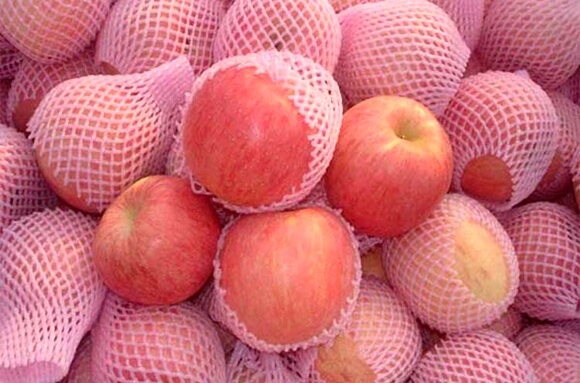

忠旺果业

富县忠旺果业合作社成立于2009年5月，目前有正式社员58人，松散型社员106人，主要从事苹果种植、新品培育、技术培训、储存销售、农资供给等业务。2012年7月，“富县忠旺”商标在国家工商管理总局正式注册成功。
合作社成立以来，全体社员发扬“艰苦奋斗、自力更生”的延安精神，奋发图强、精诚团结，致力于合作社及富县苹果产业的稳步发展。经过近六年来的不懈努力，已累计投入建设资金1350万元，建成年储存能力2000余吨的冷藏库一座，职工宿办用房12间240平米，苹果商品化处理车间300余平米。截止2014年，累计储存苹果6000余吨，为果农增收约0.6元/斤，带动了周边5000余人次的劳动力。